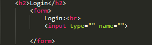
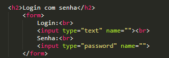
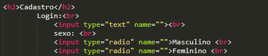
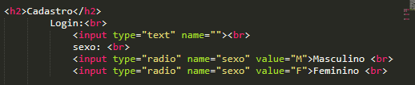
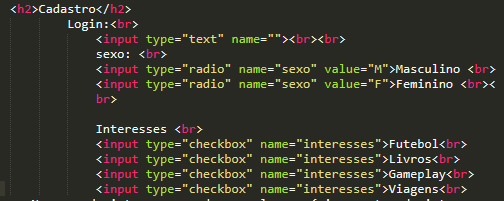
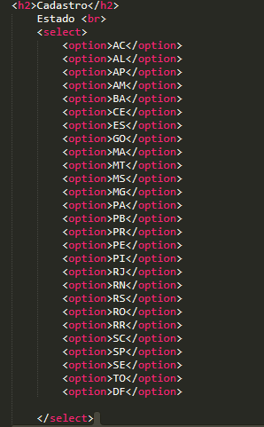
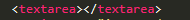
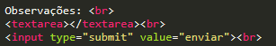

Formulários servem para, por exemplo: capturar dados do cliente, fazer login em algum sistema ou site, impedir que quem são tenha acesso, não entre em sites privados dentre outras...
Vamos aprender também a criar formulários para cadastro.
A tag ultilizada para criar um formulário é a tag "form", dentro dela é possível abrir outra tag "input" onde você precisa colocar os atributos dos campos.Exemplo:

No atrubuto de "name" por enquanto não se coloca nada pois ele serve para capturar os dados do usuário por uma linguagem de programação e depois processá-los.
Usa se a tag input pois são os dados que serão incluídos aqui, irão passar por um processamento em linguagem de programação que veremos em um outro módulo.

Veja que o type da senha agora é "password. Com isso, quando o usuário for digitar a senha, ela não aparece, o que aparece são dígitos escondidos por pontos. Se quiser que apareça a senha enquanto digita, basta trocar o password por text.
Relembrando que a tag "br" é usada sempre quando há necessidade de colocar um espaço entre os elementos.
Para incluir um botão no formulário de login basta usar a tag imput com o atributo type="submit" e colocar também o atrubuto "value=logar" para que o botão tenha o nome impresso nele, indicando ao usuário onde ele tem que clicar para processar os dados inseridos.
Para fazer um cadastro basta usar a tag input, depois definir o que o usuário vai marcar, no exemplo acima, o sexo, e depois colocar os atributos, neste caso usaremos o radio que são botões circulares para selecionar.

Neste caso não definimos ainda o comportamento do botão de seleção, pois como está o usuário vai poder selecionar os 2 botões e ambos não poderiam ser desmarcados, por isso deve-se formatar as configurações lá nos atributos. Essa configuração é bem simples, basta preencer o atributo name="" por sexo, assim o usuário clica em ambos mas os dois não ficam igualmente selecionados. Depois disso deve-se definir o "value" para que essa informação seja capturada por uma linguagem de programação e processar.

No caso de interesses pode se colocar vários pontos de interesses para o cliente selecionar, sem ter a necessidade de limitar os botões pela quantidade preenxida. Lembre se que deve colocar o atributo "name" para que essa informação possa ser resgatada pela linguagem de programação para que seja armazenada e processada.


Neste caso usamos uma lista de estados para que o usuário selecione. Para não ficar todas as opções a mostra, é melhor fazer uma lista onde ele escolhe e aparece somente o que ele escolheu.
Para guardar a informação do estado para que uma linguagem de programação possa trabalhar com esses valores selecionados aqui basta declarar uma "value" dentro das opções de select:

Para definir uma parea onde o usuário pode escrever livremente ou uma área de corpo de e-mail, por exemplo, usa se a tag "textarea"

Para colocar um botão de enviar ou cadastrar, basta incluir a tag input para o botão. Isso fará com que o código reconheça esse comando de submeter e enviar o formulário pra onde desejar a funcionalidade.
Observações: